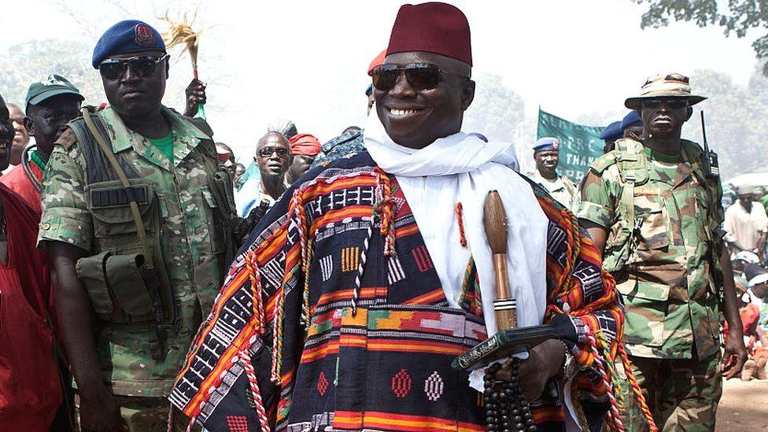
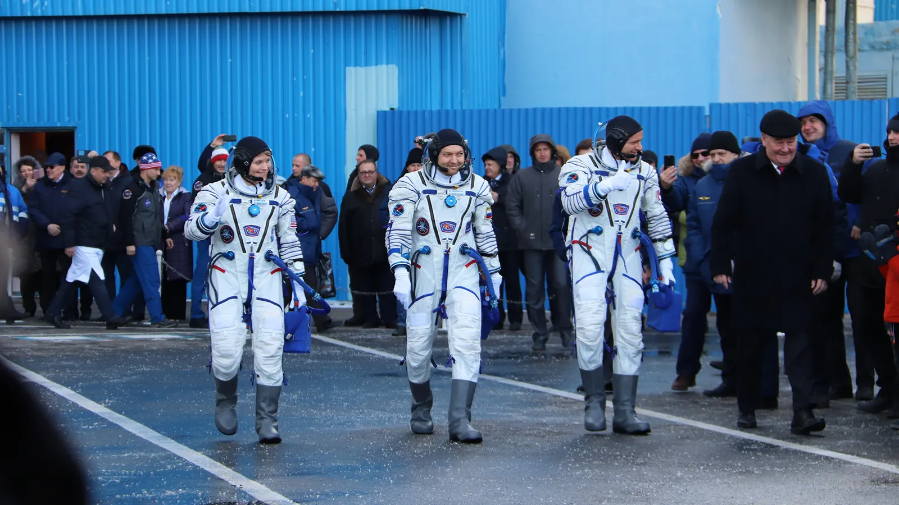

AFGHAN NEWS the most trusted source
Gambia elections: Ex-President Yahya Jammeh's shadow looms over poll
The truth commission's report sets the scene for a showdown between the two men, who have already abandoned a controversial pre-election deal their parties announced in September.
Humanity's unlikely gateway to space
Hidden from the world for decades, Baikonur Cosmodrome helped the Soviets reach outer space. Today, it's the world's primary spaceport – although its sense of secrecy remains.
The world's first and most secretive space base, Baikonur Cosmodrome, sits in the middle of a vast Central Asian desert, 2,600km south-east of Moscow and 1,300km from Kazakhstan's two main cities, Nur-Sultan and Almaty. It was from this remote part of the western steppe in 1957 that the Soviet Union successfully launched the first artificial satellite – Sputnik 1 – into orbit around Earth. Four years later, in 1961, Yuri Gagarin launched from here to become the first human to fly into space aboard the Vostok 1. And in 1963, Valentina Tereshkova launched from Baikonur as the first woman in space. After the retirement of Nasa's Space Shuttle programme in 2011, Baikonur became the planet's only working launch site to the International Space Station (ISS). Now, 60 years after Gagarin's historic first flight, it remains the world's main spaceport. But how and why did a dusty outpost in the wilds of western Kazakhstan become humanity's unlikely gateway to outer space? To get to space, you need two things: to be far away from populated areas; and to be as close to the equator as possible to take advantage of the Earth's rotational speed, which is fastest at that contour of the planet. In the case of the US space programme, this meant the east coast of Florida, where the Kennedy Space Center was built. The Soviet Union, meanwhile, went to the Kazakh Soviet Socialist Republic in search of a remote locale within its borders that could accommodate long-range missile testing and rocket launches.